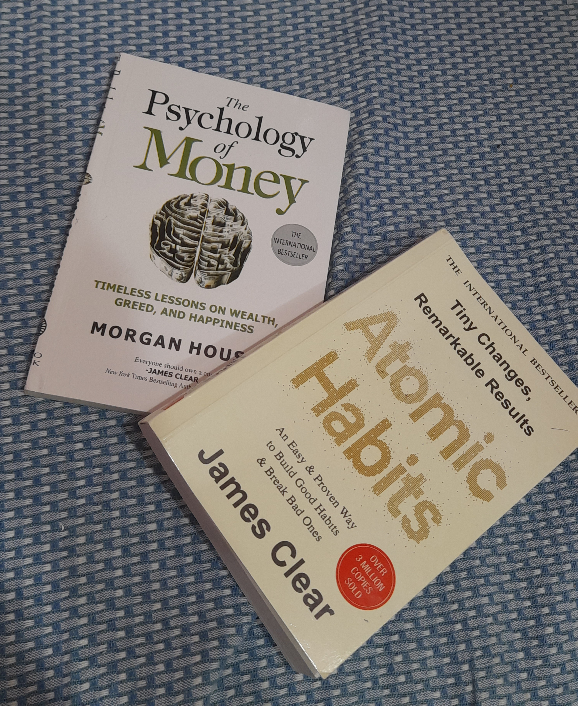

Tarun Singh
Summary:
- I am 17 year old Boy with Enfj-A(Kuma) personality.
- Fast & Creative programmer. Fresher(No work Experience yet).
- Learning new skills and Think out of the Box is my habit.
Education:
- Finished 12th grade in Non-Medical stream.
- Coursera-
- Introduction To Computer Science-CS50 Harvard(In progress).
- Full Stack Software Developer-I.B.M(In progress)
Skills:
- Professional Anime Artist
- Web Development-Beginner
Achievements:
- 1.5K Followers on Instagram Art Account.
Hobbies:
- Creating Digital Content(especially Anime).
- Reading Books.

- Journalism.

- Meditiation & Brainstorming.
Read More About Me!
Feel Free to Contact Me :)